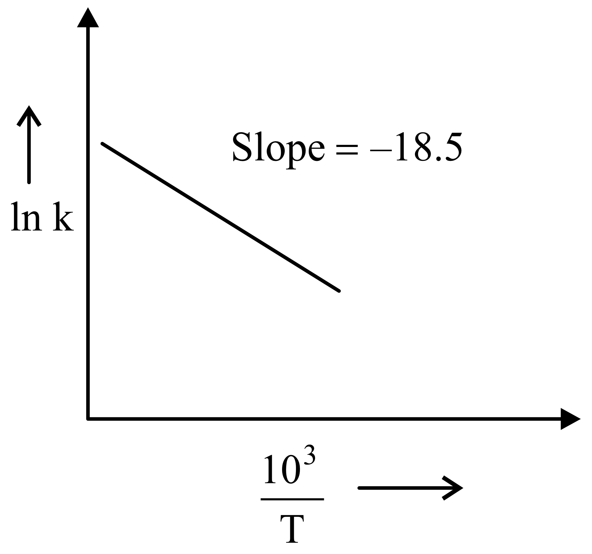

🧪 Redox Reactions
90
Total Questions
5
Years
1
Clusters
Question Clusters
CHEM-REDOREAC-OXIDATION_NUMBER_METHOD
Redox Reactions: Oxidation Number Determination & Redox Balancing
Year-wise Frequency
| Year | Questions | Frequency |
|---|---|---|
| 2021 | 23 | |
| 2022 | 9 | |
| 2023 | 20 | |
| 2024 | 33 | |
| 2025 | 5 |
Questions
Showing first 50 of 90 questions.
Q59 (2021 Shift 2)
The sum of oxidation states of two silver ions in complex is _____ . AgNH32Ag ( CN ) 2
Answer:
2CHEM-2021-0101-S2-Q059
Q32 (2021 Shift 1)
Given below are two statements: Statement I : H2O2 can act as both oxidising and reducing agent in basic medium. Statement II : In the hydrogen economy, the energy is transmitted in the form of dihydrogen. In the light of the above statements, choose the correct answer from the options given below:
CHEM-2021-0101-S1-Q032
Q43 (2021 Shift 1)
Match List-I with List-II List-I List-II Name of oxo acid Oxidation state of ' P
CHEM-2021-0101-S1-Q043
Q35 (2021 Shift 2)
The correct statements about H2O2 are :
CHEM-2021-0101-S2-Q035
Q33 (2021 Shift 2)
The oxidation states of nitrogen in NO, NO2, N2O and NO− are in the order of : 3
CHEM-2021-0101-S2-Q033
Q33 (2021 Shift 1)
The species given below that does NOT show disproportionation reaction is:
CHEM-2021-0101-S1-Q033
Q60 (2021 Shift 2)
An aqueous solution of NiCl2 was heated with excess sodium cyanide in presence of strong oxidizing agent to [Ni(CN)6]2−. form The total change in number of unpaired electrons on metal centre is ___________.
Answer:
2CHEM-2021-0101-S2-Q060
Q44 (2021 Shift 1)
Which one of the following group- 15 hydride is the strongest reducing agent ?
CHEM-2021-0101-S1-Q044
Q33 (2021 Shift 1)
CHEM-2021-0101-S1-Q033
Q42 (2021 Shift 2)
The incorrect statement among the following is:
CHEM-2021-0101-S2-Q042
Q44 (2021 Shift 1)
Given below are two statements: Statement I : CeO2 can be used for oxidation of aldehydes and ketones. Statement II : Aqueous solution of EuSO4 is a strong reducing agent. In the light of the above statements, choose the correct answer from the options given below:
CHEM-2021-0101-S1-Q044
Q40 (2021 Shift 1)
The correct order of following 3d metal oxides, according to their oxidation numbers is :
CHEM-2021-0101-S1-Q040
Q35 (2021 Shift 2)
Identify the process in which change in the oxidation state is five : O2− Cr3+ MnO− →Mn2+
CHEM-2021-0101-S2-Q035
Q42 (2021 Shift 1)
Given below are two statements. Statement I: The choice of reducing agents for metals extraction can be made by using the Ellingham diagram, a plot of ΔG vs temperature. Statement II: The value of ΔS increases from left to right in the Ellingham diagram. In the light of the above statements, choose the most appropriate answer from the options given below:
CHEM-2021-0101-S1-Q042
Q43 (2021 Shift 1)
The incorrect statement is:
CHEM-2021-0101-S1-Q043
Q37 (2021 Shift 1)
Compound A used as a strong oxidizing agent is amphoteric in nature. It is the part of lead storage batteries. Compound A is:
CHEM-2021-0101-S1-Q037
Q55 (2021 Shift 1)
Dichromate ion is treated with base, the oxidation number of in the product formed is Cr
Answer:
6CHEM-2021-0101-S1-Q055
Q55 (2021 Shift 2)
In mildly alkaline medium, thiosulphate ion is oxidized by MnO− 4 to ′′A′′ . The oxidation state of sulphur in ′′A′′ is_
Answer:
6CHEM-2021-0101-S2-Q055
Q32 (2021 Shift 1)
In polythionic acid, H2 SxO6(x = 3 to 5 ) the oxidation state(s) of sulphur is/are:
CHEM-2021-0101-S1-Q032
Q34 (2021 Shift 1)
The oxidation states of ′P′ in H4P2O7, H4P2O5 and H4P2O6, respectively, are :
CHEM-2021-0101-S1-Q034
Q42 (2021 Shift 1)
Which one of the following lanthanides exhibits oxidation state with diamagnetic nature ? (Given for +2 Z Nd = 60, Yb = 70, La = 57, Ce = 58)
CHEM-2021-0101-S1-Q042
Q48 (2021 Shift 1)
Given below are two statements : one is labelled as Assertion
CHEM-2021-0101-S1-Q048
Q32 (2021 Shift 2)
In which one of the following sets all species show disproportionation reaction?
CHEM-2021-0101-S2-Q032
Q59 (2022 Shift 1)
The difference in oxidation state of chromium in chromate and dichromate salts is___

Answer:
0CHEM-2022-0101-S1-Q059
Q53 (2022 Shift 2)
Manganese (VI) has ability to disproportionate in acidic solution. The difference in oxidation states of two ions it forms in acidic solution is
Answer:
3CHEM-2022-0101-S2-Q053
Q42 (2022 Shift 1)
Cerium IV has a noble gas configuration. Which of the following is correct statement about it?
CHEM-2022-0101-S1-Q042
Q43 (2022 Shift 1)
Among the following, which is the strongest oxidizing agent?
CHEM-2022-0101-S1-Q043
Q44 (2022 Shift 1)
Choose the correct stability order of group 13 elements in their +1 oxidation state.
CHEM-2022-0101-S1-Q044
Q34 (2022 Shift 2)
Which one of the following is an example of disproportionation reaction? MnO2− MnO− MnO−
CHEM-2022-0101-S2-Q034
Q42 (2022 Shift 2)
The most common oxidation state of Lanthanoid elements is +3 . Which of the following is likely to deviate easily from +3 oxidation state?
CHEM-2022-0101-S2-Q042
Q43 (2022 Shift 2)
Which of the following oxoacids of sulphur contains "S" in two different oxidation states?
CHEM-2022-0101-S2-Q043
Q59 (2022 Shift 1)
An acidified manganate solution undergoes disproportionation reaction. The spin-only magnetic moment value of the product having manganese in higher oxidation state is____B.M. (Nearest integer) − − Q60. C6H12O6 Zymase → A NaOI → B + CHI3 Δ The number of carbon atoms present in the product B is
Answer:
0CHEM-2022-0101-S1-Q059
Q59 (2023 Shift 1)
Sum of oxidation states of bromine in bromic acid and perbromic acid is

Answer:
12CHEM-2023-0101-S1-Q059
Q32 (2023 Shift 1)
Which of the following options are correct for the reaction? - 2 - 2Au ( CN ) (aq) + Zn(s) →2Au(s) + Zn ( CN ) (aq) 2 4 A. Redox reaction B. Displacement reaction C. Decomposition reaction D. Combination reaction Choose the correct answer from the options given below:
CHEM-2023-0101-S1-Q032
Q33 (2023 Shift 1)
Strong reducing and oxidizing agents among the following , respectively, are
CHEM-2023-0101-S1-Q033
Q59 (2023 Shift 1)
In ammonium - phosphomolybdate, the oxidation state of Mo is +_______
Answer:
6CHEM-2023-0101-S1-Q059
Q52 (2023 Shift 2)
Given below are two statements: one is labelled as “Assertion A” and the other is labelled as “Reason R” Assertion A : In the complex Ni(CO)4 and Fe(CO)5 , the metals have zero oxidation state. Reason R : Low oxidation states are found when a complex has ligands capable of -donor character in π addition to the σ -bonding. In the light of the above statements, choose the most appropriate answer from the options given below (1) A is correct but R is not correct (2) A is not correct but R is correct (3) Both A and R are correct but R is NOT the (4) Both A and R are correct and R is the correct correct explanation of A explanation of A

Answer:
4CHEM-2023-0101-S2-Q052
Q55 (2023 Shift 2)
The sum of oxidation state of the metals in Fe(CO)5 , VO2+ and WO3 is
Answer:
233CHEM-2023-0101-S2-Q055
Q44 (2023 Shift 1)
Which of the following statements are correct?
CHEM-2023-0101-S1-Q044
Q60 (2023 Shift 2)
The difference in the oxidation state of Xe between the oxidised product of Xe formed on complete hydrolysis of XeF4and XeF4 is

Answer:
2CHEM-2023-0101-S2-Q060
Q33 (2023 Shift 1)
For compound having the formula GaAlCl4, the correct option from the following is
CHEM-2023-0101-S1-Q033
Q47 (2023 Shift 2)
The number of correct statements from the following is........... A. Ecell is an intensive parameter B. A negative Eo means that the redox couple is a stronger reducing agent than the H+/H2 couple. C. The amount of electricity required for oxidation or reduction depends on the stoichiometry of the electrode reaction. D. The amount of chemical reaction which occurs at any electrode during electrolysis by a current is proportional to the quantity of electricity passed through the electrolyte.
CHEM-2023-0101-S2-Q047
Q55 (2023 Shift 2)
Given below are two statements, one is labelled as assertion A and the other is labelled as Reason R . assertion A : [CoCl (NH3)5]2+ absorbs at lower wavelength of light with respect to [Co (NH3)5(H2O)]3+ Reason R : It is because the wavelenght of light absorbed depends on the oxidation state of the metal ion. In the light of the above statements,choose the correct answer from the options given below: (1) A is false but R is true (2) A is true but R is false (3) Both A and R are true and R is the correct (4) Both A and R are true and R is NOT the correct explaination of A explaination of A
Answer:
1CHEM-2023-0101-S2-Q055
Q44 (2023 Shift 2)
The covalency and oxidation state respectively of boron in BF4 -, are
CHEM-2023-0101-S2-Q044
Q58 (2023 Shift 1)
In Chromyl chloride, the oxidation state of chromium is (+) ___________.
Answer:
6CHEM-2023-0101-S1-Q058
Q38 (2023 Shift 2)
In which of the following reactions the hydrogen peroxide acts as a reducing agent?
CHEM-2023-0101-S2-Q038
Q50 (2023 Shift 2)
Which one amongst the following are good oxidising agents?
CHEM-2023-0101-S2-Q050
Q38 (2023 Shift 2)
Which one among the following metals is the weakest reducing agent?
CHEM-2023-0101-S2-Q038
Q51 (2023 Shift 2)
Potassium dichromate acts as a strong oxidizing agent in acidic solution. During this process, the oxidation state changes from (1) +3 to +1 (2) +6 to +3 (3) +2 to +1 (4) +6 to +2

Answer:
12CHEM-2023-0101-S2-Q051
Q51 (2023 Shift 2)
The set of correct statements is: (i) Manganese exhibits +7 oxidation state in its oxide. (ii) Ruthenium and Osmium exhibit +8 oxidation in their oxides. (iii) Sc shows +4 oxidation state which is oxidizing in nature. (iv) Cr shows oxidising nature in +6 oxidation state. (1) (ii) and (iii) (2) (i), (ii) and (iv) (3) (i) and (iii) (4) (ii), (iii) and (iv)
Answer:
270CHEM-2023-0101-S2-Q051